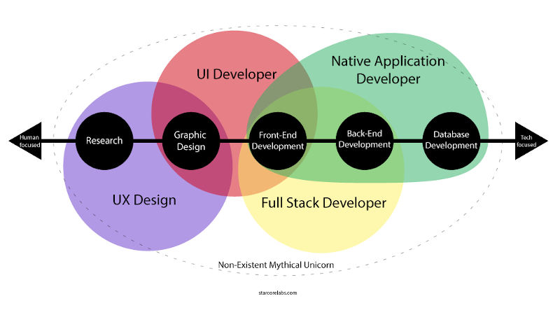

How Developers See Job Listings
2020-12-01

Intro
With the current Pandemic finding a job is even more difficult than usual. Normally, finding a job is a job in itself. The goal of this post is to teach you to see and understand job listings like a developer. I hope this will help you make a more informed decision when looking for a development job.
Pizza Shop Example
I find the best way to help non-technical people understand foreign concepts is to connect them to something they already know. Consider how a Pizza place works. Frontend and Backend.
Why Titles Matter
The core skills of developers does bleed over. However, the fact remains that graphic designers, frontend, and backend developers all make different salaries. This is due to the level of education, skills, and experience required to do these specific jobs. Here's a color-coded card with title, average salary, and standard skills for each specialized profession.
Job Searches
When looking for a job online people search for titles that best match their skills. Frontend vs Backend. Because no one wants to apply for a job they know they do not have the skills for. People are searching more for frontend than backend. Because they feel frontend is easier to learn. The truth is both frontend and backend are equally difficult skill sets to master.
Levels of Experience
Judging skill levels by arbitrary qualifiers or years of experience is subjective. Still, here is the scale that is commonly used when looking for a role.
- Entry = 0 years
- Junior = 1 to 3 years
- Associate = 3 to 5 years
- Senior = 5+ years
Generally speaking the higher the level of expertize required the higher the salary. This also means a greater amount of work, more complex problems and projects, less time to accomplish tasks, and more unrealistic expectations from non-technical management.
Plus, Senior developers are expected to mentor Entry and Junior level developers. Which means you'll be helping them with their work along with doing your own.
Unrealistic Expectations:
- Bachelor's degree in Software, Computer Science, or equivalent
- Deals well with constant change and high levels of ambiguity
- Anything "pixel perfect" is a lie because browsers render code differently
- Take ownership of creating web pages and applications from start to finish
- Energetic willingness to roll-up-your-sleeves and do whatever it takes
- Be willing to do everything from solving hard technical issues, to resolving more menial tasks
- Estimate how long a task that you've never done will take
- Stay up to date on the latest coding strategies, best practices, trending methodologies and troubleshooting, and tactical technologies useful to our environment
- Be a team player and advocate for best practices and methodologies
- Be comfortable working in an independent environment
- Thrives on learning and learns quickly. Takes advantage of various resources to self-educate
- A keen eye for detail is essential
- Must be able to meet deadlines
- Assigned tasks with time limits based on project goal, not developer skill level
- Must be versatile and able to contribute and add value to the team on a variety of tasks
- Work in self-directed, fast-paced (nimble) environment
- Maintain an upbeat and positive attitude at all times
- Ability to communicate positively and honestly (I'm positive this is bullshit)
- Zero intimidation of new technologies and ability to self-teach yourself quickly on the fly
- Solution driven with ability to understand the big picture
Basic Skills
- Must be fluent in written and spoken English
- Strong interpersonal and communication skills
- Must be organized and able to manage and track time effectively
- Ability to work collaboratively with co-workers, customers, and management
- Ability to independently manage small to medium projects
- Windows, Mac, Linux
- Office Apps: Google Docs, Microsoft Office, LibreOffice
- Chat and Video: Slack, Teams, Skype, Zoom
- Tracking: JIRA, Confluence, Trello
- Research: Google, Stack Overflow, MDN
- Source control: Git, GitHub, GitLab, Bitbucket
- Code Editor: VSCode, Sublime, Atom, Brackets
- JSON
- RESTful APIs
- Unit testing
- SCRUM
- Agile software development lifecycle methodologies
Frontend (Browser)
- HTML, Markdown
- CSS, SCSS,
- Bootstrap, Tailwind
- JavaScript, jQuery, Typescript, Node, NPM
- React, Redux, Redux-Saga, Reselect
- Vue
- Svelte
- Angular (includes all flavors)
- Webpack, Parcel, Gulp, Web Components
- Accessibility
- SEO
- Cross-browser, cross-platform, and cross-device compatible web pages
Backend (Server)
- Node, NPM
- PHP, Cake, Laravel, Magento, WordPress
- Java, Spring, Hibernate, JSP
- Python, Django
- C#, .Net, ASP.Net, Razor
- SQL, MySQL,
- MongoDB
Developer Education
Regardless if you went to college or are self-taught. Learning to read and write code takes time and practice. This is similar to learning to read, write, and speak a second language.
Few people are going to learn enough to be conversational over a weekend. Even so, people are forgiving when you make mistakes where machines are not. If your code is not perfect it fails. Usually with obscure errors that only seasoned developers will understand.
Reverse Bait and Switch
There is an unethical sales tactic called "Bait and Switch". This where companies will offer an in-demand product at a discounted price to draw people in. Then tell the customer its out of stock and try to sell them on a more expensive similar item that is in stock.
For the last 5 years corporations looking for developers have been posting job listings that are a "Reverse Bait and Switch". By advertizing a Frontend role that pays less than a Backend position. While requiring developers to have all the skills of both a Frontend and Backend developer. This would actually be considered a full-stack role. But most corporations do not want to pay the high salary required to employ a full-stack developer.
They target these "reverse bait-and-switch" positions toward recent college graduates who are inexperienced, full of energy, looking to prove themselves, and deep in student loan debt. These people are willing to take on jobs that pay half of the industry standard while being expected to do twice the work.
Some argue that developers should learn everything. But highly skilled full-stack developers are jacks of all trades and masters of none. They are the Unicorns of the software world and generally speaking do not exist.
Think about it. If you were talented enough to do the work of a full software development team. Why wouldn't you build your own app and sell it directly to customers?
Real World Example
Here's a recent listing that I've found. I've used the same color coding system from my Titles example to illustrate how many different jobs are being crammed into one. It is highly unrealistic to expect one person to hold all these skills at a professional level of expertise. While only getting paid the lowest salary possible.
Catch All
Corporations have attempted to turn Frontend development into a "Catch All". In my opinion they do this for 2 reasons.
- Frontend, UI, UX, have become corporate buzzwords that are thrown around by people in suits who have only a vague idea of what those terms mean. More often than not the executive types do not know how to code or the limitations of the technology they are making decisions for. All they know is that Frontend makes things look good. Being image oriented they see Frontend like going to a hair stylist. It's an addon or after thought. They do not care to understand how it works or its value.
- The majority of for profit corporations operate under the old golden rule, "He who has the gold, makes the rules".
So in their infinite wisdom (sarcasm) they assume because they are creating the positions within their company they can redefine an industry wide accepted standard title like "Frontend Developer". I mean they are the ones paying so they can set the terms, right?
That's the question. Is it right for them to dictate terms. When all of the colleges, bootcamps, and online courses are teaching developers the clearly defined definitions of Frontend and Backend. Setting people up with skill, daily work load, and salary expectations. Only to be shocked to find that's now how the corporate world works.
Three Solutions
Now that you can see how frustrating looking for a frontend developer role is. You might wonder what can be done about this issue?
- Corporations could use "Full Stack" as their catch all. This change of title would make it clear to potential candidates that this job includes skills from different professions. They can offer whatever salary range they like. Its up to job seekers to accept or decline.
- They could spend a bit more time and money breaking these catch all positions into separate jobs. Giving more people the opportunity to work, learn, and develop better skills. It might cost the company a bit more in salary but if they treat their employees kindly they will profit in the long run.
- Create a custom title like "Web Engineer" that has no default skill sets or salary ranges associated with it. Then they can add whatever responsibilities they like to it.